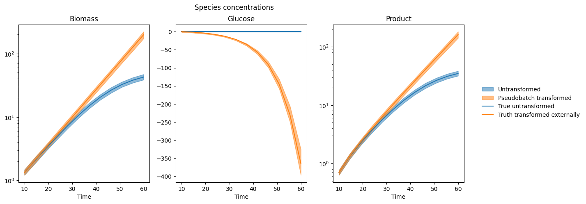
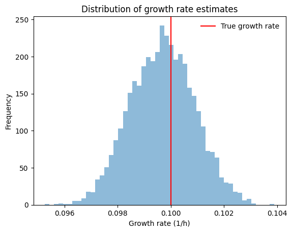
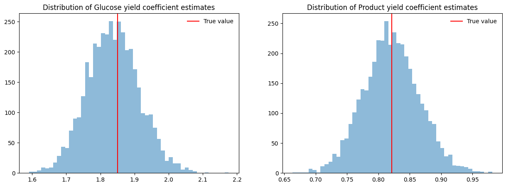

Pseudobatch transformation with uncertainties#
This notebook describes how to use the Pseudobatch transformation with error propagation of the measurement uncertainties. This utilizes a Bayesian model which is provided as a precompiled model implemented in the programming language Stan.
Imports#
[1]:
import logging
from itertools import islice
import arviz as az
import cmdstanpy
import numpy as np
import pandas as pd
import xarray as xr
from matplotlib import pyplot as plt
from matplotlib.collections import PolyCollection
from scipy.special import logit
from pseudobatch.data_correction import pseudobatch_transform
from pseudobatch.datasets import load_standard_fedbatch
from pseudobatch.error_propagation import run_error_propagation
cmdstanpy_logger = logging.getLogger("cmdstanpy")
cmdstanpy_logger.disabled = True
{'stan_version_major': '2', 'stan_version_minor': '32', 'stan_version_patch': '2', 'STAN_THREADS': 'false', 'STAN_MPI': 'false', 'STAN_OPENCL': 'false', 'STAN_NO_RANGE_CHECKS': 'false', 'STAN_CPP_OPTIMS': 'false'}
Loading data#
This cell uses the function load_standard_fedbatch from pseudobatch’s datasets module to load a standard dataset. It then adds some columns that will be useful later.
[2]:
SPECIES = ["Biomass", "Glucose", "Product"]
samples = load_standard_fedbatch(sampling_points_only=True)
samples["v_Feed_interval"] = np.concatenate(
[np.array([samples["v_Feed_accum"].iloc[0]]), np.diff(samples["v_Feed_accum"])]
)
for species in SPECIES:
samples[f"c_{species}_pseudobatch"] = pseudobatch_transform(
measured_concentration=samples[f"c_{species}"],
reactor_volume=samples["v_Volume"],
accumulated_feed=samples["v_Feed_accum"],
concentration_in_feed=100 if species == "Glucose" else 0,
sample_volume=samples["sample_volume"],
)
samples
[2]:
| Kc_s | mu_max | Yxs | Yxp | Yxco2 | F0 | mu0 | s_f | sample_volume | timestamp | ... | v_Feed_accum | c_Glucose | c_Biomass | c_Product | c_CO2 | mu_true | v_Feed_interval | c_Biomass_pseudobatch | c_Glucose_pseudobatch | c_Product_pseudobatch | |
|---|---|---|---|---|---|---|---|---|---|---|---|---|---|---|---|---|---|---|---|---|---|
| 0 | 0.15 | 0.3 | 1.85 | 0.82151 | 0.045193 | 0.159031 | 0.1 | 100.0 | 100.0 | 10.000000 | ... | 15.906036 | 0.075012 | 1.337854 | 0.694737 | 0.038219 | 0.100011 | 15.906036 | 1.337854 | 0.075012 | 0.694737 |
| 1 | 0.15 | 0.3 | 1.85 | 0.82151 | 0.045193 | 0.159031 | 0.1 | 100.0 | 100.0 | 14.545455 | ... | 28.960902 | 0.075010 | 2.078116 | 1.308552 | 0.071987 | 0.100009 | 13.054865 | 2.107737 | -1.349271 | 1.327204 |
| 2 | 0.15 | 0.3 | 1.85 | 0.82151 | 0.045193 | 0.159031 | 0.1 | 100.0 | 100.0 | 19.090909 | ... | 47.314262 | 0.075111 | 3.203015 | 2.241303 | 0.123300 | 0.100099 | 18.353360 | 3.320595 | -3.593059 | 2.323579 |
| 3 | 0.15 | 0.3 | 1.85 | 0.82151 | 0.045193 | 0.159031 | 0.1 | 100.0 | 100.0 | 23.636364 | ... | 72.816654 | 0.075020 | 4.879772 | 3.631646 | 0.199786 | 0.100018 | 25.502392 | 5.231542 | -7.128310 | 3.893442 |
| 4 | 0.15 | 0.3 | 1.85 | 0.82151 | 0.045193 | 0.159031 | 0.1 | 100.0 | 100.0 | 28.181818 | ... | 107.795685 | 0.075064 | 7.307921 | 5.645033 | 0.310547 | 0.100057 | 34.979030 | 8.242050 | -12.697749 | 6.366604 |
| 5 | 0.15 | 0.3 | 1.85 | 0.82151 | 0.045193 | 0.159031 | 0.1 | 100.0 | 100.0 | 32.727273 | ... | 155.117789 | 0.075010 | 10.681703 | 8.442525 | 0.464444 | 0.100009 | 47.322105 | 12.985050 | -21.472300 | 10.263028 |
| 6 | 0.15 | 0.3 | 1.85 | 0.82151 | 0.045193 | 0.159031 | 0.1 | 100.0 | 100.0 | 37.272727 | ... | 218.291500 | 0.075015 | 15.109112 | 12.113671 | 0.666403 | 0.100014 | 63.173711 | 20.457389 | -35.296127 | 16.401631 |
| 7 | 0.15 | 0.3 | 1.85 | 0.82151 | 0.045193 | 0.159031 | 0.1 | 100.0 | 100.0 | 41.818182 | ... | 301.721795 | 0.075044 | 20.503292 | 16.586449 | 0.912462 | 0.100039 | 83.430295 | 32.229719 | -57.074938 | 26.072721 |
| 8 | 0.15 | 0.3 | 1.85 | 0.82151 | 0.045193 | 0.159031 | 0.1 | 100.0 | 100.0 | 46.363636 | ... | 411.318523 | 0.075043 | 26.510976 | 21.567936 | 1.186506 | 0.100038 | 109.596728 | 50.776554 | -91.386583 | 41.309136 |
| 9 | 0.15 | 0.3 | 1.85 | 0.82151 | 0.045193 | 0.159031 | 0.1 | 100.0 | 100.0 | 50.909091 | ... | 555.738790 | 0.075049 | 32.568141 | 26.590453 | 1.462807 | 0.100044 | 144.420266 | 79.996288 | -145.443091 | 65.313447 |
| 10 | 0.15 | 0.3 | 1.85 | 0.82151 | 0.045193 | 0.159031 | 0.1 | 100.0 | 100.0 | 55.454545 | ... | 748.568771 | 0.075009 | 38.092445 | 31.171129 | 1.714802 | 0.100008 | 192.829982 | 126.030807 | -230.606950 | 103.131275 |
| 11 | 0.15 | 0.3 | 1.85 | 0.82151 | 0.045193 | 0.159031 | 0.1 | 100.0 | 100.0 | 60.000000 | ... | 1011.780642 | 0.075012 | 42.688520 | 34.982129 | 1.924454 | 0.100010 | 263.211870 | 198.556126 | -364.778790 | 162.711568 |
12 rows × 25 columns
Specifying priors#
The next cell specifies the prior distributions required for pseudobatch’s error propagation function. These are set by choosing values for percentiles. Note that it is also possible to set prior distributions using location and scale parameters, for example:
priors = {
...
prior_v0: {"mu": 0, "sigma": 1},
...
}
[3]:
priors = {
"prior_apump": {"pct1": np.log(1 - 0.1), "pct99": np.log(1 + 0.1)},
"prior_as": {"pct1": logit(0.05), "pct99": logit(0.4)},
"prior_v0": {"pct1": 1000, "pct99": 1030},
"prior_cfeed": [{"loc": 0, "scale": 1}, {"pct1": 98, "pct99": 102}, {"loc": 0, "scale": 1}],
}
Running the error propagation function#
[4]:
idata = run_error_propagation(
y_concentration=samples[[f"c_{species}" for species in SPECIES]],
y_reactor_volume=samples["v_Volume"],
y_feed_in_interval=samples["v_Feed_interval"],
y_sample_volume=samples["sample_volume"],
y_concentration_in_feed=[0, 100, 0],
sd_reactor_volume=0.05,
sd_concentration=[0.05] * 3,
sd_feed_in_interval=0.05,
sd_sample_volume=0.05,
sd_concentration_in_feed=0.05,
prior_input=priors,
species_names=SPECIES
)
idata
[4]:
-
<xarray.Dataset> Dimensions: (chain: 4, draw: 1000, sample: 12, species: 3, f_nonzero_dim_0: 12, cfeed_nonzero_dim_0: 1) Coordinates: * chain (chain) int64 0 1 2 3 * draw (draw) int64 0 1 2 3 4 5 6 ... 994 995 996 997 998 999 * sample (sample) int64 0 1 2 3 4 5 6 7 8 9 10 11 * species (species) <U7 'Biomass' 'Glucose' 'Product' * f_nonzero_dim_0 (f_nonzero_dim_0) int64 0 1 2 3 4 5 6 7 8 9 10 11 * cfeed_nonzero_dim_0 (cfeed_nonzero_dim_0) int64 0 Data variables: (12/13) v0 (chain, draw) float64 1.018e+03 998.2 ... 1.021e+03 m (chain, draw, sample, species) float64 1.478e+03 ...... as (chain, draw, sample) float64 -2.163 -2.074 ... -2.104 f_nonzero (chain, draw, f_nonzero_dim_0) float64 15.06 ... 254.2 cfeed_nonzero (chain, draw, cfeed_nonzero_dim_0) float64 98.44 ...... apump (chain, draw) float64 0.06312 0.08119 ... -0.01371 ... ... s (chain, draw, sample) float64 106.5 104.6 ... 100.6 v (chain, draw, sample) float64 1.033e+03 937.2 ... 925.9 c (chain, draw, sample, species) float64 1.432 ... 31.73 pump_bias (chain, draw) float64 -2.763 -2.511 -2.684 ... nan nan cfeed (chain, draw, species) float64 0.0 98.44 ... 98.99 0.0 pseudobatch_c (chain, draw, sample, species) float64 1.432 ... 148.2 Attributes: created_at: 2023-07-03T13:48:18.128279 arviz_version: 0.15.0 inference_library: cmdstanpy inference_library_version: 1.1.0 -
<xarray.Dataset> Dimensions: (chain: 4, draw: 1000) Coordinates: * chain (chain) int64 0 1 2 3 * draw (draw) int64 0 1 2 3 4 5 6 ... 993 994 995 996 997 998 999 Data variables: lp (chain, draw) float64 -167.5 -173.0 ... -162.1 -162.5 acceptance_rate (chain, draw) float64 0.979 0.8256 0.7841 ... 1.0 0.917 step_size (chain, draw) float64 0.3782 0.3782 0.3782 ... 0.378 0.378 tree_depth (chain, draw) int64 4 4 4 4 4 4 3 4 4 ... 4 3 4 4 3 4 4 4 4 n_steps (chain, draw) int64 15 31 15 15 31 15 ... 15 15 15 15 15 15 diverging (chain, draw) bool False False False ... False False False energy (chain, draw) float64 191.2 210.4 219.1 ... 184.7 193.4 Attributes: created_at: 2023-07-03T13:48:18.132092 arviz_version: 0.15.0 inference_library: cmdstanpy inference_library_version: 1.1.0 -
<xarray.Dataset> Dimensions: (chain: 4, draw: 1000, sample: 12, species: 3, f_nonzero_dim_0: 12, cfeed_nonzero_dim_0: 1) Coordinates: * chain (chain) int64 0 1 2 3 * draw (draw) int64 0 1 2 3 4 5 6 ... 994 995 996 997 998 999 * sample (sample) int64 0 1 2 3 4 5 6 7 8 9 10 11 * species (species) <U7 'Biomass' 'Glucose' 'Product' * f_nonzero_dim_0 (f_nonzero_dim_0) int64 0 1 2 3 4 5 6 7 8 9 10 11 * cfeed_nonzero_dim_0 (cfeed_nonzero_dim_0) int64 0 Data variables: (12/13) v0 (chain, draw) float64 1.019e+03 1.011e+03 ... 1.005e+03 m (chain, draw, sample, species) float64 1.857 ... 1.0... as (chain, draw, sample) float64 -1.317 -1.624 ... -2.761 f_nonzero (chain, draw, f_nonzero_dim_0) float64 1.607e-05 ...... cfeed_nonzero (chain, draw, cfeed_nonzero_dim_0) float64 101.5 ...... apump (chain, draw) float64 -0.04206 -0.05 ... -0.02817 ... ... s (chain, draw, sample) float64 215.4 275.4 ... 30.3 v (chain, draw, sample) float64 1.019e+03 ... 509.4 c (chain, draw, sample, species) float64 0.001822 ... ... pump_bias (chain, draw) float64 nan nan -3.941 ... nan -2.812 nan cfeed (chain, draw, species) float64 0.0 101.5 ... 101.7 0.0 pseudobatch_c (chain, draw, sample, species) float64 0.001822 ... ... Attributes: created_at: 2023-07-03T13:48:18.217045 arviz_version: 0.15.0 inference_library: cmdstanpy inference_library_version: 1.1.0 -
<xarray.Dataset> Dimensions: (chain: 4, draw: 1000) Coordinates: * chain (chain) int64 0 1 2 3 * draw (draw) int64 0 1 2 3 4 5 6 ... 993 994 995 996 997 998 999 Data variables: lp (chain, draw) float64 -77.91 -73.95 -72.84 ... -71.55 -82.2 acceptance_rate (chain, draw) float64 0.7126 1.0 0.9777 ... 0.9113 0.6664 step_size (chain, draw) float64 0.5 0.5 0.5 ... 0.5262 0.5262 0.5262 tree_depth (chain, draw) int64 3 3 3 3 3 3 3 3 3 ... 3 3 3 3 3 3 3 3 3 n_steps (chain, draw) int64 7 7 7 7 7 7 7 7 7 ... 7 7 7 7 7 7 7 7 7 diverging (chain, draw) bool False False False ... False False False energy (chain, draw) float64 111.7 100.9 99.36 ... 99.43 107.1 Attributes: created_at: 2023-07-03T13:48:18.220025 arviz_version: 0.15.0 inference_library: cmdstanpy inference_library_version: 1.1.0
Diagnostics#
The next cell prints some diagnostic information. By inspecting it we can see that:
There were no post warmup divergent transitions, indicating that the sampler was able to explore the posterior without significant approximation errors.
There were no parameters with r_hat values more than 0.01 away from 1, indicating that the chains converged.
The posterior
mcse_sdparameters are fairly small.
[5]:
display(az.summary(idata.sample_stats))
display(az.summary(idata.prior).sort_values("r_hat"))
display(az.summary(idata.posterior).sort_values("r_hat"))
/Users/tedgro/.pyenv/versions/3.11.1/lib/python3.11/site-packages/arviz/stats/diagnostics.py:592: RuntimeWarning: divide by zero encountered in scalar divide
(between_chain_variance / within_chain_variance + num_samples - 1) / (num_samples)
/Users/tedgro/.pyenv/versions/3.11.1/lib/python3.11/site-packages/arviz/stats/diagnostics.py:592: RuntimeWarning: invalid value encountered in scalar divide
(between_chain_variance / within_chain_variance + num_samples - 1) / (num_samples)
| mean | sd | hdi_3% | hdi_97% | mcse_mean | mcse_sd | ess_bulk | ess_tail | r_hat | |
|---|---|---|---|---|---|---|---|---|---|
| lp | -162.527 | 5.637 | -172.855 | -152.004 | 0.146 | 0.103 | 1534.0 | 2183.0 | 1.00 |
| acceptance_rate | 0.888 | 0.104 | 0.692 | 1.000 | 0.005 | 0.004 | 470.0 | 4000.0 | 1.01 |
| step_size | 0.360 | 0.027 | 0.314 | 0.378 | 0.013 | 0.010 | 4.0 | 4.0 | inf |
| tree_depth | 3.871 | 0.343 | 3.000 | 4.000 | 0.030 | 0.021 | 151.0 | 117.0 | 1.03 |
| n_steps | 14.960 | 3.952 | 7.000 | 15.000 | 0.064 | 0.045 | 3674.0 | 352.0 | 1.03 |
| diverging | 0.000 | 0.000 | 0.000 | 0.000 | 0.000 | 0.000 | 4000.0 | 4000.0 | NaN |
| energy | 194.007 | 7.965 | 179.997 | 209.407 | 0.207 | 0.147 | 1504.0 | 1755.0 | 1.00 |
arviz - WARNING - Array contains NaN-value.
/Users/tedgro/.pyenv/versions/3.11.1/lib/python3.11/site-packages/arviz/stats/diagnostics.py:592: RuntimeWarning: invalid value encountered in scalar divide
(between_chain_variance / within_chain_variance + num_samples - 1) / (num_samples)
/Users/tedgro/.pyenv/versions/3.11.1/lib/python3.11/site-packages/arviz/stats/diagnostics.py:592: RuntimeWarning: invalid value encountered in scalar divide
(between_chain_variance / within_chain_variance + num_samples - 1) / (num_samples)
| mean | sd | hdi_3% | hdi_97% | mcse_mean | mcse_sd | ess_bulk | ess_tail | r_hat | |
|---|---|---|---|---|---|---|---|---|---|
| v0 | 1.014848e+03 | 6.230000e+00 | 1003.090 | 1026.580 | 7.400000e-02 | 5.200000e-02 | 7058.0 | 2787.0 | 1.0 |
| c[3, Product] | 3.749241e+07 | 1.488481e+09 | 0.000 | 679.342 | 2.349180e+07 | 1.661242e+07 | 5164.0 | 2714.0 | 1.0 |
| c[4, Biomass] | 6.589573e+05 | 1.706515e+07 | 0.000 | 387.309 | 2.689487e+05 | 1.903303e+05 | 5882.0 | 3301.0 | 1.0 |
| c[4, Glucose] | 6.139150e+07 | 3.850971e+09 | 0.000 | 404.374 | 6.076677e+07 | 4.297191e+07 | 5494.0 | 2947.0 | 1.0 |
| c[4, Product] | 3.448247e+07 | 1.484260e+09 | 0.000 | 591.041 | 2.341394e+07 | 1.656037e+07 | 6075.0 | 2523.0 | 1.0 |
| ... | ... | ... | ... | ... | ... | ... | ... | ... | ... |
| f_nonzero[4] | 2.865808e+05 | 8.627348e+06 | 0.000 | 9774.150 | 1.361099e+05 | 9.626052e+04 | 5300.0 | 2982.0 | 1.0 |
| pseudobatch_c[11, Product] | 6.835619e+06 | 2.269915e+08 | 0.000 | 4938.510 | 3.579780e+06 | 2.532712e+06 | 5817.0 | 3006.0 | 1.0 |
| pump_bias | NaN | NaN | -11.437 | NaN | NaN | NaN | NaN | NaN | NaN |
| cfeed[Biomass] | 0.000000e+00 | 0.000000e+00 | 0.000 | 0.000 | 0.000000e+00 | 0.000000e+00 | 4000.0 | 4000.0 | NaN |
| cfeed[Product] | 0.000000e+00 | 0.000000e+00 | 0.000 | 0.000 | 0.000000e+00 | 0.000000e+00 | 4000.0 | 4000.0 | NaN |
175 rows × 9 columns
arviz - WARNING - Array contains NaN-value.
/Users/tedgro/.pyenv/versions/3.11.1/lib/python3.11/site-packages/arviz/stats/diagnostics.py:592: RuntimeWarning: invalid value encountered in scalar divide
(between_chain_variance / within_chain_variance + num_samples - 1) / (num_samples)
/Users/tedgro/.pyenv/versions/3.11.1/lib/python3.11/site-packages/arviz/stats/diagnostics.py:592: RuntimeWarning: invalid value encountered in scalar divide
(between_chain_variance / within_chain_variance + num_samples - 1) / (num_samples)
| mean | sd | hdi_3% | hdi_97% | mcse_mean | mcse_sd | ess_bulk | ess_tail | r_hat | |
|---|---|---|---|---|---|---|---|---|---|
| v0 | 1012.733 | 5.958 | 1001.490 | 1023.960 | 0.080 | 0.057 | 5512.0 | 3339.0 | 1.0 |
| c[3, Product] | 3.633 | 0.186 | 3.296 | 3.988 | 0.002 | 0.001 | 8308.0 | 3028.0 | 1.0 |
| c[4, Biomass] | 7.311 | 0.374 | 6.636 | 8.016 | 0.004 | 0.003 | 6859.0 | 2888.0 | 1.0 |
| c[4, Glucose] | 0.075 | 0.004 | 0.068 | 0.082 | 0.000 | 0.000 | 8030.0 | 3099.0 | 1.0 |
| c[4, Product] | 5.655 | 0.280 | 5.152 | 6.203 | 0.003 | 0.002 | 6900.0 | 2698.0 | 1.0 |
| ... | ... | ... | ... | ... | ... | ... | ... | ... | ... |
| f_nonzero[4] | 34.629 | 1.934 | 30.934 | 38.066 | 0.030 | 0.021 | 4059.0 | 2991.0 | 1.0 |
| pseudobatch_c[11, Product] | 160.454 | 10.143 | 141.886 | 179.915 | 0.152 | 0.108 | 4426.0 | 3259.0 | 1.0 |
| pump_bias | NaN | NaN | -12.601 | NaN | NaN | NaN | NaN | NaN | NaN |
| cfeed[Biomass] | 0.000 | 0.000 | 0.000 | 0.000 | 0.000 | 0.000 | 4000.0 | 4000.0 | NaN |
| cfeed[Product] | 0.000 | 0.000 | 0.000 | 0.000 | 0.000 | 0.000 | 4000.0 | 4000.0 | NaN |
175 rows × 9 columns
Plotting some modelled quantities#
[6]:
def plot_timecourse_qs(
ax: plt.Axes,
varname: str,
idata_group: xr.Dataset,
timepoints: pd.Series,
coords: dict,
quantiles: list = [0.025, 0.975],
**fill_between_kwargs
) -> PolyCollection:
var_draws = idata_group[varname]
for k, v in coords.items():
if k in var_draws.coords:
var_draws = var_draws.sel({k:v})
qs = var_draws.quantile(quantiles, dim=["chain", "draw"]).to_dataframe()[varname].unstack("quantile")
low = qs[0.025].values
high = qs[0.975].values
x = timepoints.values
return ax.fill_between(x, low, high, **fill_between_kwargs)
f, axes = plt.subplots(1, 3, figsize=[14, 5])
for ax, species in zip(axes, SPECIES):
pcs = []
line_patches = []
for var, color in zip(["c", "pseudobatch_c"], ["tab:blue", "tab:orange"]):
true_value_colname = "c_" + species if var == "c" else f"c_{species}_pseudobatch"
pc = plot_timecourse_qs(
ax,
var,
idata.posterior,
samples["timestamp"],
{"species": [species]},
color=color,
alpha=0.5,
)
pcs += [pc]
line = ax.plot(samples["timestamp"], samples[true_value_colname], color=color)
line_patches += [line[-1]]
txt = ax.set(xlabel="Time", title=species)
if all(samples[true_value_colname] > 0):
ax.semilogy()
f.suptitle("Species concentrations")
legend = f.legend(
[*pcs, *line_patches],
["Untransformed", "Pseudobatch transformed", "True untransformed", "Truth transformed externally"],
ncol=1,
loc="right",
frameon=False,
bbox_to_anchor = [1.11, 0.5]
)

Estimating the growth rate#
One thing that you might want to do with pseudobatch transformation is to estimate the measured cells’ growth rate.
This can be done for each sample from our posterior distribution, giving us an idea of the range of growth rate estimates that are consistent with our model. Even better, since we used a simulated dataset we know that the true growth rate is 0.1, so we can compare our estimated growth rates with the truth.
[7]:
def fit_log_linear_model(y, x):
logy = np.log(y.values)
slope, intercept = np.polyfit(x, logy, deg=1)
return xr.DataArray([slope, intercept])
growth_coeffs = pd.DataFrame(
idata.posterior["pseudobatch_c"]
.sel(species="Biomass")
.stack(chaindraw=("chain", "draw"))
.groupby("chaindraw")
.map(fit_log_linear_model, x=samples["timestamp"], shortcut=True)
.values,
columns=["slope", "intercept"]
)
growth_coeffs.index.name = "draw"
display(growth_coeffs.T)
f, ax = plt.subplots()
hist = ax.hist(growth_coeffs["slope"], bins=50, alpha=0.5)
vline = ax.axvline(samples["mu_true"].iloc[0], c="red", label="True growth rate")
txt = ax.set(
xlabel="Growth rate (1/h)",
ylabel="Frequency",
title="Distribution of growth rate estimates"
)
leg = ax.legend(frameon=False)
# the 0.025, 0.5 and 0.975 quantiles of the fitted slopes
# print(fitted_growth_rates.slope.quantile([0.025, 0.5, 0.975]))
| draw | 0 | 1 | 2 | 3 | 4 | 5 | 6 | 7 | 8 | 9 | ... | 3990 | 3991 | 3992 | 3993 | 3994 | 3995 | 3996 | 3997 | 3998 | 3999 |
|---|---|---|---|---|---|---|---|---|---|---|---|---|---|---|---|---|---|---|---|---|---|
| slope | 0.100563 | 0.097783 | 0.098278 | 0.099686 | 0.101068 | 0.101316 | 0.098067 | 0.102834 | 0.097442 | 0.100408 | ... | 0.099785 | 0.099723 | 0.098377 | 0.100559 | 0.098495 | 0.100405 | 0.100877 | 0.099099 | 0.100707 | 0.100210 |
| intercept | -0.749385 | -0.700156 | -0.681140 | -0.722874 | -0.733568 | -0.730269 | -0.668184 | -0.816686 | -0.613831 | -0.750851 | ... | -0.715435 | -0.704905 | -0.677340 | -0.748247 | -0.674170 | -0.726473 | -0.745942 | -0.686357 | -0.724833 | -0.672287 |
2 rows × 4000 columns

Estimating yield coefficients#
[8]:
def fit_linear_model(y, x):
slope, intercept = np.polyfit(x, y, deg=1)
return xr.DataArray([slope, intercept])
yield_dfs = {}
for species in ["Glucose", "Product"]:
yield_dfs[species] = pd.DataFrame(
idata.posterior["pseudobatch_c"]
.sel(species=["Biomass", species])
.stack(chaindraw=["chain", "draw"])
.groupby("chaindraw")
.map(lambda arr: fit_linear_model(arr.sel(species=species), arr.sel(species="Biomass")))
.values,
columns=["slope", "intercept"]
)
print("Glucose yield coefficients:")
display(yield_dfs["Glucose"].T)
print("Product yield coefficients:")
display(yield_dfs["Product"].T)
f, axes = plt.subplots(1, 2, figsize=[15, 5])
for ax, species, true_value_colname in zip(axes, ["Glucose", "Product"], ["Yxs", "Yxp"]):
hist = ax.hist(np.abs(yield_dfs[species]["slope"]), bins=50, alpha=0.5)
vline = ax.axvline(samples[true_value_colname].iloc[0], color="red", label="True value")
title = ax.set(title=f"Distribution of {species} yield coefficient estimates")
leg = ax.legend(frameon=False)
Glucose yield coefficients:
| 0 | 1 | 2 | 3 | 4 | 5 | 6 | 7 | 8 | 9 | ... | 3990 | 3991 | 3992 | 3993 | 3994 | 3995 | 3996 | 3997 | 3998 | 3999 | |
|---|---|---|---|---|---|---|---|---|---|---|---|---|---|---|---|---|---|---|---|---|---|
| slope | -1.673408 | -1.919489 | -1.863063 | -2.043851 | -1.716198 | -1.789833 | -1.804438 | -1.802143 | -1.693276 | -1.833871 | ... | -1.778527 | -1.821576 | -1.971884 | -1.771107 | -1.849922 | -1.752436 | -1.918724 | -1.852371 | -1.930001 | -1.754854 |
| intercept | 0.193008 | 1.833747 | 3.257683 | 2.972678 | -1.659823 | 1.104880 | 0.727595 | -1.043755 | -1.183151 | 2.319698 | ... | 0.353335 | 1.039266 | 3.235374 | -0.629834 | 1.297535 | -0.850759 | 1.967145 | 0.624897 | 1.689225 | 0.214510 |
2 rows × 4000 columns
Product yield coefficients:
| 0 | 1 | 2 | 3 | 4 | 5 | 6 | 7 | 8 | 9 | ... | 3990 | 3991 | 3992 | 3993 | 3994 | 3995 | 3996 | 3997 | 3998 | 3999 | |
|---|---|---|---|---|---|---|---|---|---|---|---|---|---|---|---|---|---|---|---|---|---|
| slope | 0.736324 | 0.864708 | 0.793535 | 0.861501 | 0.852441 | 0.839319 | 0.797877 | 0.798457 | 0.766420 | 0.848405 | ... | 0.768074 | 0.841559 | 0.874981 | 0.740513 | 0.895185 | 0.755955 | 0.805727 | 0.844195 | 0.827466 | 0.753747 |
| intercept | 0.685844 | -0.320718 | -0.517448 | -0.405781 | -0.840883 | -1.087207 | 0.503870 | 0.141197 | 1.157896 | -1.126168 | ... | 0.683636 | -0.781743 | -1.679997 | 2.047887 | -1.020167 | 0.709075 | -0.600833 | -0.408123 | -0.950142 | 0.976159 |
2 rows × 4000 columns
